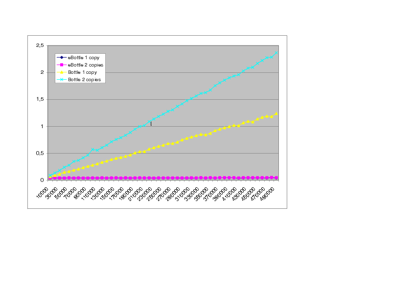

eBottle Documentation
0.1
- Author:
- Danilo Tardioli et al. (UniZar) <dantard@unizar.es>
Pablo Urcola (documentation) <urcola@unizar.es>
D. Tardioli, P. Urcola (debug)
- Version:
- 0.1 beta
The idea of this project came out when we were testing YARP for communicating different processes using
YARP Bottles . We realised that, for large data transmission, the execution time was surprinsingly huge, even if we were working in a single computer.
Another test, with smaller data but with a high frequency requirement was made and again we found the same problem.
We discovered that one of the critic points where the program spent most of the time was at the assignment operator, that is, the copy method.
After making some consults to YARP developers, they told us that Bottles and Values were not designed for efficient transmission but for human readable data purposes.
We decided, as YARP developers suggest us, to reimplement the Bottle and Value classes in order to make copy method and data transmission faster and more efficient.
We present here a new implementation which is more efficient and tries to keep all the compatibility with the original Bottles.

This figure shows a comparative of the execution time (in seconds) of a program that simply makes assignments between bottles of different sizes.
The eBootle can be used in any YARP-based project in the same way as any other YARP object. However in case you have already written code using standard YARP Bottle and want to improve its performance, you only have to include the
compatibility.h file in all the source files that use the Bottles. This file simply makes a redefinition of the Value and Bottle to eValue and eBottle forcing the compiler to use the latters.
We have implemented many of the functionality that the original Bottle and Value clasess have. Our tests work with both implementations, with a difference in the efficiency. But some of you may need other funcitonality offered by the original Bottle that we have not implemented. Please, let us know and we will consider to include it.
Furthermore, if you find any bug that we have not discovered, contact us at dantard@unizar.es or urcola@unizar.es in order to solve the problem.